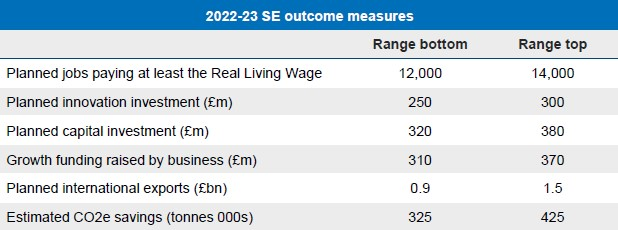
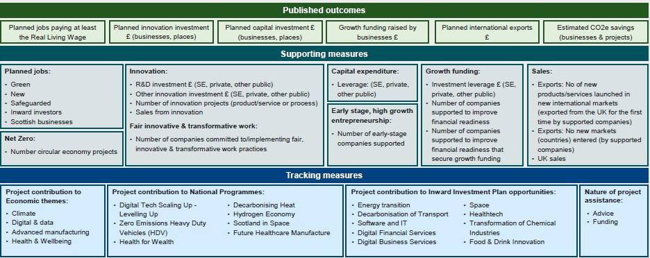

Plans and Strategies
Corporate Plan
Overview
Priorities
- International
- Innovation
- Investment
They overlap
NSET (2032)
- Discusses National Strategy for Economic Transformation
- Read NSET Summary here
-
Calls these 5 policy programmes
- stimulate entrepreneurship
- open new markets
- increase productivity
- develop the skills Scotland needs for the decade ahead
- ensure fairer and more equal economic opportunities
Our Purpose
Help businesses innovate and scale to transform the economy
Whether you are a new, earlystage, or existing business with ambitions to grow, we will work with you to stimulate investment in innovation, support you into high growth markets, boost export performance and build productive and engaged workforces that underpin sustainable competitive businesses
Goals
- Unlocking Scotland’s potential:
- Seizing opportunities:
- Increasing competitiveness:
- Boosting business sustainability:
Ambitions
- Innovation (process, product and service innovation as well as new technologies and research)
- Build Scotland’s International competitiveness.
- Deliver new Investment into the economy, either directly into companies or into infrastructure that will ensure innovative and internationally minded companies can start and grow in scale.
- Alongside fair work outcomes and a successful transition to net zero
Ambitions: Building on Success
- Business development and advice
- Providing innovation support
- Export and international market support
- Targeting capital and inward investment
- Supporting businesses to transition to net zero
- Investing in projects
Projects like:
- SMART R&D
- Low Carbon Manufacturing Challenge Fund
Ambitions: Innovation
Improve Scotland's innovationperformance and reputation, making Scotland the leading innovation nation in the UK
Maximise Scotland's Innovation Assets & Research Excellence
Help translate these into growth.
To drive transformation we will deliver:
- Stimulate innovative places and ecosystems.
- Boost company innovation.
- Integrated delivery (SE Align and Integrate our support)
1. Stimulate innovative places and ecosystems
- Identify priority innovative places where Scottish Enterprise will allocate resource in the medium-long term and develop our approach to connecting these assets, both with companies, and with Scottish Enterprise’s national programmes, set up to prioritise and align action behind major opportunities for Scotland’s economy in the longer term.
- Support the development of solutions on public procurement alongside policy and regulation to stimulate action by the private sector.
- Work with partners to simplify the existing support landscape to ensure many more Scottish companies can access the right innovation at the right time, to enable growth.
- Support the development and delivery of the next stage of the Innovation Centre Programme.
- Establish and strengthen relationships with external funders to help lever funding into our economic opportunities.
2. Boost company innovation
- Continue to drive a targeted approach to stimulate more company R&D and greater exploitation of HE research excellence through partnership between business, Scottish Enterprise and the university sector.
- Support early-stage companies and SMEs to innovate and transition into emerging domestic and international market opportunities.
- Co-develop and deliver with the Business Support Partnership a broad holistic range of innovation support to support company growth, enabling them to benefit from emerging market opportunities in areas like low carbon and the circular economy.
- Encourage more companies to use Scotland's innovation assets such as Innovation Districts, Innovation Centres and the National Manufacturing Institute Scotland.
- Stimulate more demand-driven innovation from both private and public sectors to open markets to innovative companies and create supply chain opportunities for SMEs.
3. Integrated delivery model
- Undertake a review of National Programmes and align with NSET Future Markets delivery plan.
- Encourage greater collaboration and connectivity between Innovation Centres, higher education institutions, research centres – including Team Scotland partners
- to help develop and deliver economic opportunities where there is benefit to Scotland’s economy.
- Share learning and proactively engage in the global community of innovation leaders, while working with partners and stakeholders to help shape and deliver Scotland’s Innovation strategy.
Ambitions: International
Internationalisation is a key driver of productivity growth,
alongside innovation and investment,
and will be a major contributor to Scotland’s long-term economic prosperity.
Scotland to be viewed as a leading European location to start, scale and internationalise a business;
As a magnet for talent to work in Scotland’s most ambitious companies;
And as a profitable and successful place to invest capital in opportunities which will accelerate Scotland's transition to net zero.
To drive transformation we will deliver:
- Boosting Trade
- Delivering Inward Investment success
- Building an Investor ready pipeline of capital investment
- Networks & Talent
1. Boosting Trade
- Provide specialist trade support for companies that will make strong contributions to Scotland’s export performance, tailoring support to business needs.
- Build greater awareness of trade support, stimulating demand across Scottish Enterprise company support.
- Work with more cohorts of early-stage companies and SMEs, building linkages with the Scottish early-stage ecosystem (e.g. EDGE, Entrepreneurial Scotland) and tech scalers, supporting companies to “design in” trade to their business plans to build a larger pipeline of future high performing exporters.
- Strengthen our use of digital channels to go wider and deeper with existing resources, using detailed analysis and market intelligence to identify areas of focus and opportunity.
- Greater focus on targeted roundtable, missions, meet the buyer events (virtual and face to face) and targeted company engagement in lead up to, and at, events.
2. Delivering Inward Investment success
- Deliver step-change in our inward investment performance to secure more Living Wage jobs and wider benefits, such as supply chain opportunities and raising Scotland’s profile as a location for investment benefits.
- Increase focus on Energy Transition & Software/IT. ScotWind is expected to be the main source of our inward opportunities and successes in the coming years, where we will attract international companies to meet the supply chain and local content needs of developers.
- Work more closely with investors offering the greatest potential for future growth for Scotland’s businesses and regions / places.
- Work with regional partners to manage relationships with a wide range of existing investors to maximise current and future investment opportunities in Scotland.
- Target international events which offer greatest potential to showcase Scotland and generate new inward investment opportunities.
3. Building an Investor ready pipeline of capital investment
- Proactively promote Scotland’s green investment portfolio through targeted international engagement, to meet the target of promoting £3bn of investable opportunities by the end of 2022 . As part of this, examine commercial financial mechanisms such as a Green Hydrogen Bond.
- Lever the full potential from existing assets such as Clyde Gateway and Glasgow’s innovation districts to secure greater investment, generating jobs and associated investment benefits, working with Business Growth to engage with relevant innovative companies.
4. Networks & Talent
- Leverage to better effect the connections and insights of GlobalScots, Scotland Europa and Scottish Enterprise in-market specialists to attract entrepreneurs and earlystagecompanies, building on Scotland’s reputation as a supportive business growth and investment eco-system.
- Work with partners to review and streamline the talent attraction eco system, creating refreshed proposition material, improving the Talent Scotland online resources, and identifying and investing in new technologies to deliver talent services.
Ambitions: Investment
Significantly increase the number of businesses, entrepreneurs and early-stage companies in Scotland who have the ability to grow to a scale where they have a major impact on the economy, nationally or regionally.
To drive transformation we will deliver:
- Early Stage and Entrepreneurship
- Deliver a felxible & connected business support model
- Culture of Delivery
- Investment across regions and places
1. Early Stage and Entrepreneurship
- Develop alliances and strategic partnerships with techscalers and other entrepreneurial places, bringing coherence to the entrepreneurship agenda, embedding Scottish Enterprise staff and expertise in diverse communities and regions, working with companies who have similar values on fair work and net zero.
- Support growth in Scotland’s Risk Capital Market through co-investing with private sector investors, to increase availability of start-up and growth capital.
- Attract international entrepreneurs, early-stage companies and investors through Scotland’s reputation of a supportive business growth and investment eco-system.
- Support initiatives focused on diversity in companies – with our expertise, advice, connections and commercial investment.
- Play a key role in supporting the delivery and success of eco-system partner entrepreneurship programmes, focusing on understanding the landscape and connecting entrepreneurs and companies to opportunities.
2. Deliver a felxible & connected business support model
- Focus our work on companies with potential to transform the economy, explicitly delivering support for the benefit of the economy.
- Prioritise Account Management company work - through national programme supply chains and/or significant regional productivity and growth.
- Clarify our proposition and priority outcomes, leveraging our strategic relationships, piloting approaches and prioritising national opportunities through the National Programmes, supply chains and new market opportunities e.g. ScotWind.
- Focus support on companies with >10 employees and those in our early-stage portfolio that have the ambition and potential to grow at pace.
- Working within the Business Support Partnership employ a digital first approach, with more targeted services delivered to individual companies and groups of companies in similar sectors or stages of growth.
3. Culture of Delivery
- With the Business Support Partnership, implement a new culture of delivery to streamline, align and transform Scotland's business support ecosystem, enabling companies to navigate and access available support easily and widening our collective reach to support more companies. As part of this, embed the Target Operating Model and provide clarity on organisational roles and delivery focus.
- Analyse the market and share insights and knowledge – to focus on where public sector efforts are working and where increased support is needed.
- Focus on performance - enable better use of data and insights at company, segment and portfolio levels and better use customer insights.
4. Investment across regions and places
- Work with local and regional partners through regional economic partnerships to help shape regional strategies and plans that translate Scotland’s internationally competitive strengths into action, opportunities and benefits across all parts of Scotland.
- Provide clear delivery plans for Scottish Enterprise’s role in regions. Work with partners to maximise outcomes at international, national, regional or local levels.
- Develop regional engagement platforms to increase visibility of Scottish Enterprise’s company support and referral processes, to further embed a new focused approach on collaboration and partnership to support regional needs.
How we will work
- Take a fresh approach to company engagement
- Succeed in our global, national and regional roles
- Use our networks, insights, foresighting and experience
- Provide solutions
- Be outward looking and focus on the things we are good at
- Strengthen relationships
- Work with others to deliver NSET
- Focus on fair work and net zero
Collaboration in practice
A unique aspect of Scottish Enterprise’s success comes from the power of our networks.
we will continue to embrace a culture of delivery that looks for ways to share learning and experiences and collaborate in delivering more for Scotland’s bu sinesses and people, for example:
- Strengthening Scotland’s international networks and reputation
- Delivering world class innovation assets and R&D facilities
- Delivering a collaborative model of business support
- Working with private sector investors to support innovative high growth, early stage companies
How we measure success
To address the gap between Scotland and the best performing economies and to achieve
Scottish Government strategic ambitions, these measures and ranges have been established
by Scottish Enterprise to track performance.
SE Outcome Measures

Performance Measurement Framework

Our Resources
| Scottish Government Funding | £ millions |
|---|---|
| Grant in Aid - Resource allocation (baseline) | 135.1 |
| Anticipated in-year transfers (net) | 2.4 |
| Total anticipated Grant in Aid – Resource Allocation | 137.5 |
| Grant in Aid – Capital allocation (baseline) | 70.0 |
| Grant in Aid – Capital allocation (Green Jobs Fund) | 10.0 |
| Anticipated in-year transfers – Capital (net) | 19.4 |
| Grant in Aid – Financial Transactions allocation (baseline) v36.1 | |
| Total anticipated Grant in Aid – Capital and FT Allocation | 135.5 |
| Total anticipated Scottish Government Funding | 273.0 |
| Other Business Income | £ millions |
|---|---|
| EU Funds 8.4 | |
| Property Disposals | 19.4 |
| Property Income | 5.8 |
| Other Business Income (excluding Growth Investments) | 8.9 |
| Growth Investments Income | 68.7 |
| Of which: | |
| Loan Repayments, Fund Receipts and Other Income | 11.2 |
| Equity Exits | 57.5 |
| Total Other Business Income | 111.2 |
| Total Income | 384.2 |
| Planned investment | 2022/23 Indicative Split of Expenditure £ millions |
|---|---|
| Investment | 154.3 |
| International | 101.5 |
| Innovation (including R&D) | 72.9 |
| Enabling Services | 55.5 |
| Total Cash Investment | 384.2 |
Building our capacity to deliver
Our plan will be bolstered by a digital strategy, finance strategy and people strategy
- Digital
- Finance
- People
Evidence Base
We want to work with more businesses with growth ambitions to innovate, export, invest and adopt responsible business practices.
In doing this, we will help them manage to change and close the gap in Scotland’s relative performance.
Why it is important?
Innovative businesses:
- are more productive, innovative, export focused
- pay higher wages
- grow twice as fast than non innovators
- business R&D supports 16,200 Scottish jobs
Exporters & inward investors:
- are more productive and innovative
- pay higher wages
- inward investors employ 700k workers
- exporting supports 470k Scottish jobs
Investment:
- Business investment boosts efficiency and productivity
- Risk capital supports innovative, high growth potential
- and early stage businesses to reach scale
- Scaling businesses are more productive, innovative and export focused
What is the challenge?
Innovative businesses:
- Business innovation activity is low just 39% of Scottish businesses (with 10+ employees) are ‘innovation active’.
- Also, business R&D investment is concentrated just 10 companies account for almost 50% ; inward investors account for 65%.
- To match best performing economies Scotland needs 2,100 more businesses innovating (+25%) and £1.8bn more R&D a year (+75%).
Investment:
- The proportion of Scottish businesses that export overseas is lower than most other UK regions and countries. Just 7% 7%( sold internationally in 2019.
- 18% of non exporters believe that they have goods and/or services are suitable for exporting = 20,000 potential exporters.
- Exports relatively concentrated, with three sectors (food & drink, petroleum/chemicals and professional/scientific services) accounting for 41%.
- To match best performing economies Scotland needs 5,500 more exporters (+45%), and £9bn more exports (+30%) to meet Scottish Government target.
Investment:
- Scotland’s business investment rate lags nearly all other OECD economies, resulting in a low capital stock this can affect the quality of the workplace and the productivity, and quality of jobs. In turn, this can impact the ability to effectively innovate.
- To match best performing economies Scotland needs £13bn more capital investment a year (+120%).
Strategic Context
The Scottish Government’s ambition for Scotland, is to create an economy that is fairer, wealthier and greener
In responding to NSET’s vision and strategic priorities, Scottish Enterprise will focus on those areas where we can deliver most value for the economy
We will help deliver the International Ambition set out in NSET and the International Strategies that sit behind it
Through our engagement with Scottish exporters, we will deliver the strategic priorities in A Trading Nation , aligned to the principles set out in A Vision for Trade
We will also leverage Scotland’s assets in key opportunity areas to attract inward investment, driven by the values led approach to Shaping Scotland’s Economy
On capital investment, we will focus on promoting market ready opportunities aligned to national opportunity areas to investors who share our values, as set out in Scotland’s Global Capital Investment Plan
Scotland’s upcoming Innovation strategy will seek to improve the performance of our national innovation system in support of NSET strategic priorities.